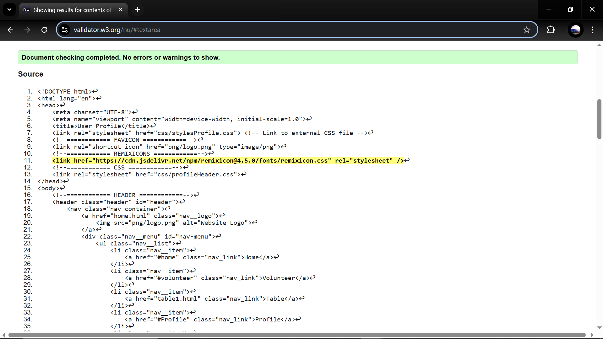
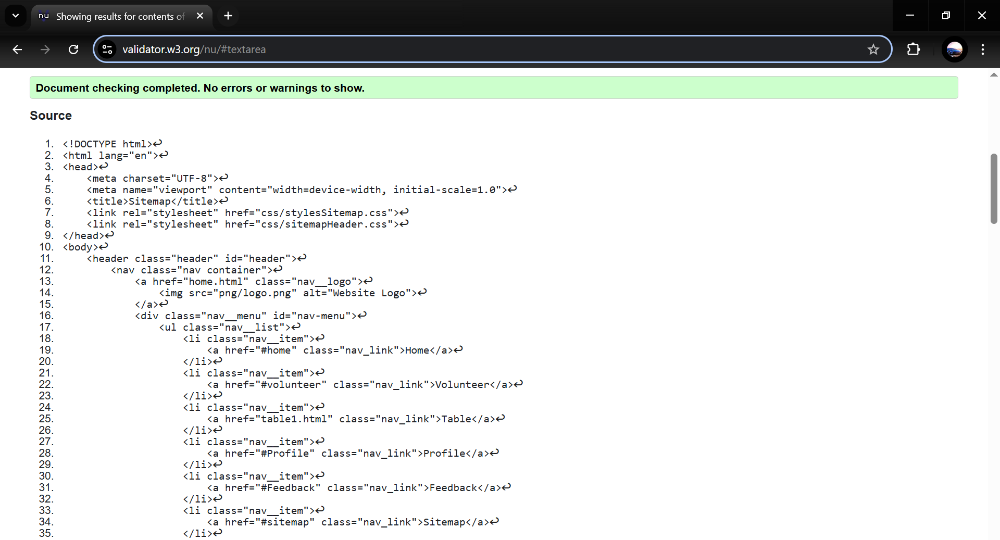
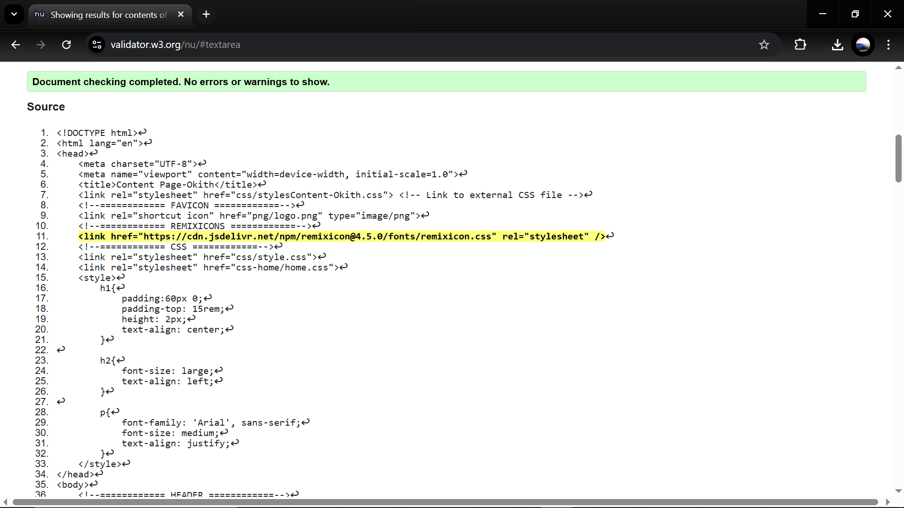

Profile Page validation report
Not an easy task. However while doing this task a person can gather many knowledge on not only how to code but also how to react to boundries and how to face them.
Back to Page Editor page
Sitemap Page validation report
Definitly had some problems getting the task done. especially when you have to connect the header and footer to the sitemap and sometimes they overlap so had problems getting it done. But after compliting it was joyful.
Back to Page Editor page
Content Page validation report
Did not have a lot of problems. Simply implimented the header and footer to display the prepaired content.
